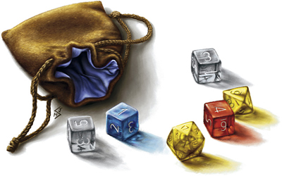

Outils online
Description rapide des outils informatique en ligne disponibles gratuitement sur Tapouweb. Aucune installation n'est nécessaire ; l'accès se fait tout simplement depuis votre navigateur.
Character Builder
Créez un personnage pour D&D 5 de A à Z. Le programme va vous guider et vous proposer tous les choix possibles, de la race à l'équipement. Au final, il va même remplir automatiquement toute la feuille de personnage D&D 5 officielle, et vous aurez également la possibilité de sauvegarder votre personnage en local sur votre machine pour pouvoir le reprendre et le faire évoluer ultérieurement ou bien sur notre serveur pour l'utiliser ensuite en ligne.
Notez que seules les races, classes et historiques du SRD sont disponibles pour tout le monde, en mode LIMITED. S'inscrire au forum du site donne accès au mode FULL.
Dice Roller
Lancez facilement toutes sortes de dés, avec avantage et désavantage par exemple, et calculez les probabilités de résultats de chacun d'eux.
Encounter Builder
Un calculateur de rencontre et de trésors pour D&D 5. En tant que MD, indiquez le niveau des personnages de votre groupe et définissez les créatures qu'ils vont affronter. L'application calcule alors automatiquement les PX de la rencontre et vous indique sa difficulté (trop facile, facile, moyenne, difficile ou mortelle).
L'application détermine également les trésors individuels de chaque créature et les gros trésors (Hoard Treasure) en proposant le détail des pièces, des objets d'art et des objets magiques, le tout en fonction de l'échelon du scénario, comme indiqué dans le DMG.
Filters
Affiche, filtre et trie tous les sorts, dons, manifestations occultes, créatures, objets magiques et plus encore de D&D 5 à l'aide de diverses options. Au final, vous avez la possibilité de sélectionner seulement certains résultats pour générer votre propre PDF, suivant différents formats selon les cas (PDF de règles, Livre de sorts ou Cartes).
Name Generator
En panne d'inspiration ? Voici un générateur qui vous proposera en un seul click des noms elfes, halfelins, nains, demi-orcs, drakéides, gnomes, tieffelins ou des noms de taverne. Et en prime, un transcripteur pour écrire en alphabet elfique, nain, céleste, draconique ou infernal.
Online Assistant
L'application de Virtual Tabletop (VTT) d'Tapouweb pour jouer à D&D 5 à distance depuis votre navigateur, sans aucune installation, en complément d'un outil de communication audio ou vidéo. L'outil permet de gérer tout ce que le média de communication principal ne peut pas gérer ou gère mal : les jets de dés, le suivi des PJ et des PNJ durant les combats (Fight Tracker), les messages privés entre joueurs et MD ou bien encore les battlemaps.
Cartes interactives
Des cartes interactives des Royaumes Oubliés, Waterdeep, Neverwinter, la Porte de Baldur, Valbise, Kara-Tur, Greyhawk, Laelith et ses provinces. Inclut un outil pour mesurer les distances et les temps de trajets. Vous pouvez également soumettre de nouveaux points ou de nouvelles descriptions pour enrichir ces atlas.
Développés par blueace